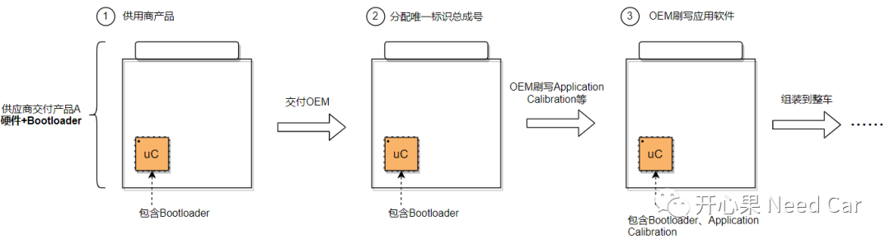
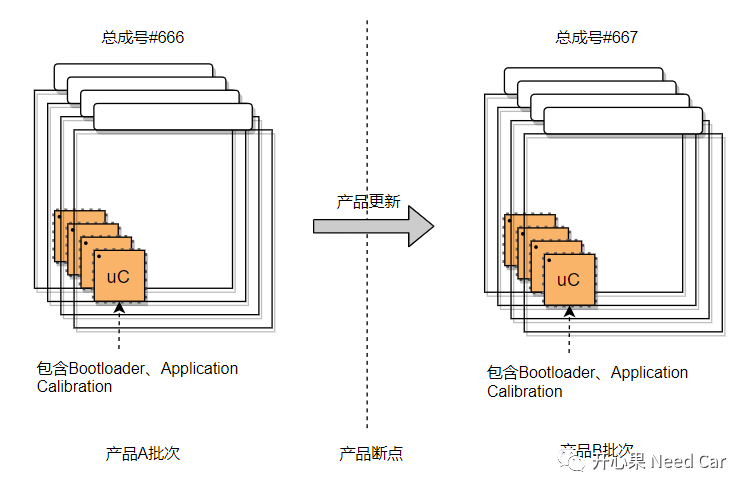
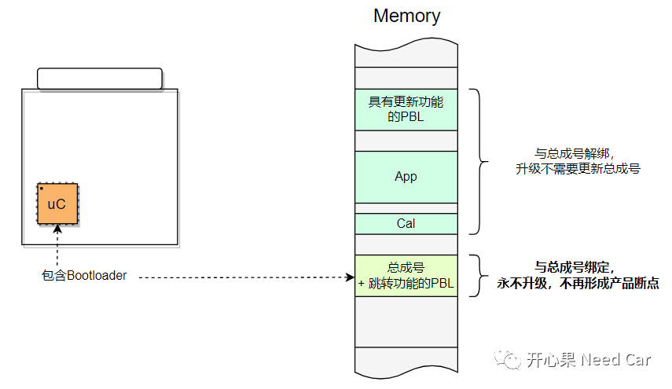
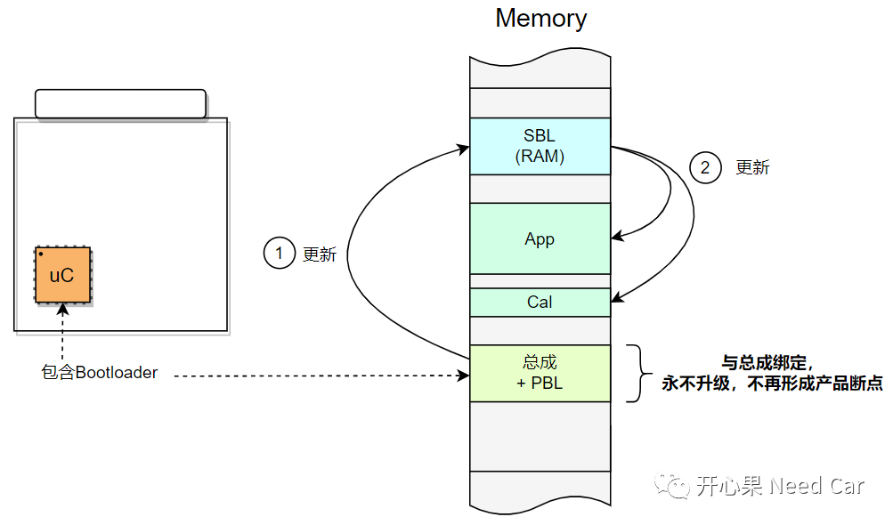

开心果 Need Car · 2023-09-21T09:22:00+08:00 · 微信原文
工程项目中，软件维护和修复是整个软件生命周期"永恒"的议题，换句话说：软件的鲁棒程度是相对的，而软件存在bug是绝对的。所以，当软件出现bug时，如何最大程度地降低维护成本是OEM（Original Equipment Manufacturer）最为关切的问题。相比Application程序或者Calibration程序的更新，Bootloater程序的更新成本更"高昂"，如何理解这里的"高昂"呢？这需要先从OEM升级Bootloader的痛点说起。
1、OEM升级Booloater程序的痛点
为什么OEM更新某个控制器的Bootloater程序更"痛苦"呢？搞清楚这个问题，就得从OEM的视角去看问题，OEM作为主机厂，生产的每一辆车，其实可以看作成千上万商品的组装。这里的商品包括大量供应商的产品。比如：某供应商A的控制器A，而供应商A的控制器A中，需要提前预刷Bootloader，之后由OEM刷写对应的Application、Calibration等软件程序。所以，从OEM视角看产品：产品A = 控制器A硬件+Bootloader程序。OEM为了维护和追踪产品，当车辆下线时，伴随车辆的产品A批次会分配唯一的"总成号"。这也就意味着，如果产品A批次出现硬件或者Bootloader迭代，则需要重新分配一个总成号。供应商某批次控制器交付OEM，到OEM刷写软件的流程，示意如下:

提示：车辆下线时，总成号通过诊断服务写入。
对于OEM来说，每次从供应商拿到产品就需要先确认产品的批次，如果控制器硬件+Bootloader没有变更，则认为是同一批次产品。如果供应商对控制器硬件或者Bootloader做了升级，OEM则认为产品有迭代，如此，则需要为新的产品分配总成号，同时，OEM工厂会产生"生成断点"。如何理解生产断点呢？如果产品没有迭代之前，OEM所拿到的产品为A批次，供应商产品更新后，OEM拿到的产品为B批次，这就意味着之前车辆装配的产品为A批次，之后车辆装配的产品为B批次，如此，OEM的车辆或者库存中就会存在两种产品，进而就形成了产品断点，示意如下所示：

形成产品断点会带来怎样的市场影响呢？如果是控制器产品硬件或者Bootloader问题，且影响驾/乘人员安全，则意味着产品需要召回，或者需要进行远程升级，修复软件Bug。如果产品召回，则意味着OEM需要承担召回的成本开销，这里的开销不单单是一个产品替换的成本，还会涉及售后、维修人员等费用开销。而且产品断点还会带来产品管控的风险，举例：由于产品批次混淆，在OEM产线端，可能出现新下线车辆装错产品批次问题。
本文讨论Bootloader出现问题如何解决，或者说是否有更好的方案避免产品断点问题。
Bootloader本身就属于软件范畴，只是因为从OEM角度，将其看作产品的一部份。按照OEM的生产处理流程，如果Bootloader出问题，且必须升级时，则OEM一定需要为修复的产品批次分配总成号，进而出现产品断点。所以，产品断点的原因之一是因为Bootloader和总成号绑定，深度耦合。如果Bootloader程序不与总成号绑定，像Application或者Calibration那样，出现bug，随时更新，是否就不会形成产品断点呢？答：是的。
2、避免产品断点方案
（一）方案一
既然Bootloader改动需要重新分配总成号，是否可以在软件中将总成号与Bootloadr程序解绑？答：可以。在软件层面，将总成号单独拆分出来，放在某固定区域（该区域不随着Bootloader更新而改动），只要OEM分配一次总成号即可。在软件的角度，此处的PBL（Primary Bootloader）与总成号绑定，PBL只起到跳转作用。由于总成号不再修改，OEM工厂也就认为Bootloader永远不用修改，即：产品不会形成断点。同时，将原有的PBL升级功能放到内存的其他区域，与App、Cal等软件程序同等处理，当更新程序出问题时，按照App流程更新即可。方案示意如下：

（二）方案二
工程中，PBL出问题，很多时候是因为路由子节点、队列刷写、并行刷写造成的。如果将PBL中的这些功能移交给SBL（Secondary Bootloader）处理，也就意味着PBL出现问题的概率极大降低，进而降低总成号分配频次，避免形成过多的产品断点。因为SBL本身放在RAM区，即使每次修改也不会带来额外影响，示意如下：

其实，不管方案一、方案二还是其它方案，最终都需要考虑对整车测试、EE测试、OEM产线、OTA等各个环节的影响，尽量做到影响范围最小，实施性最高。
往期精彩回顾
Autosar EcuM：APP由RUN到POST_RUN浅析
CAN FD通信：数据段错误，错误帧的速率是500Kbps还是2Mbps？